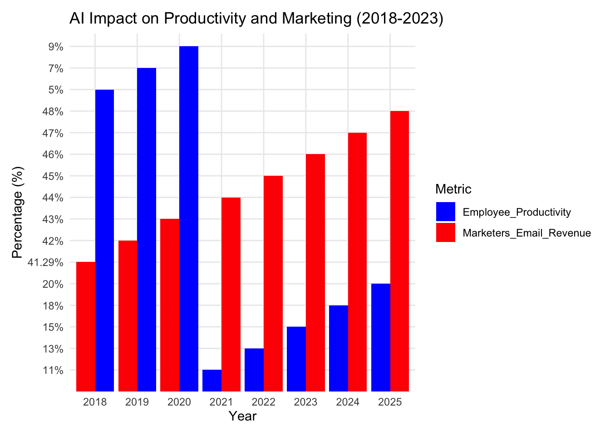
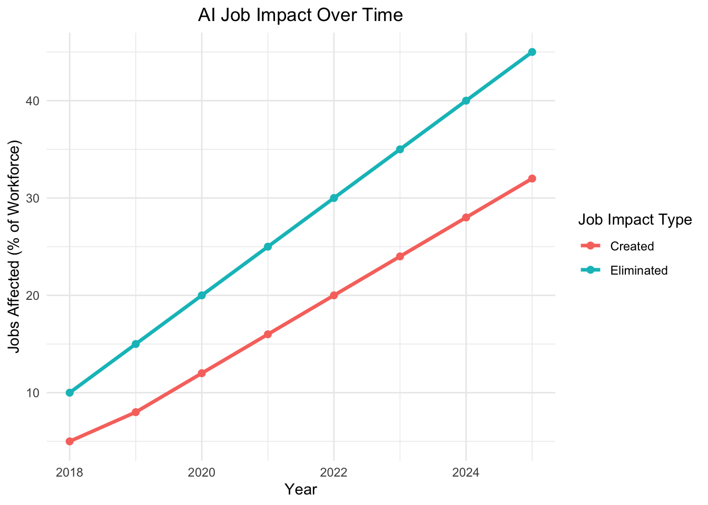

Artificial Intelligence (AI) is transforming the world around us. It is streamlining workflows, powering innovation, and raising serious questions about the future of work, privacy, education, and ethics. Like any powerful tool, AI brings benefits and challenges. Here is my take: the good, the bad, and the ugly, with some personal reflections on where I believe AI is headed.
AI has the potential to significantly enhance productivity. It helps speed up tasks and automates time-consuming processes, from analyzing large datasets to generating reports or creative content. Whether it is used for summarizing documents, forecasting trends, or managing customer inquiries, AI frees people to focus on higher-level thinking instead of repetitive tasks.
For companies, especially those dealing with sensitive information, in-house AI systems are on the rise. These secure platforms allow organizations to input confidential data into their own AI tools without risking exposure. It is a game-changer for businesses looking to innovate while maintaining strict privacy standards.
AI is also an incredible tool for idea generation. The suggestions it gives might not always be perfect, but they spark new ways of thinking. Even if the first output isn’t quite right, it often provides the spark or starting point you need to move forward.
Some people are understandably skeptical. Does AI really work as well as advertised? Can we trust the output? These are valid concerns. That is why proper training is key. Users need to understand how to work with AI, when to question its output, and how to interpret the results meaningfully. When used with skill and awareness, AI can elevate human performance, not replace it.
Beyond automating tasks, AI is driving measurable productivity gains. Surveys indicate employee productivity improvements attributed to AI are expected to rise from 41% in 2018 to nearly 48% in 2025. Similarly, over 47% of marketers now believe AI enhances email revenue, highlighting AI’s tangible impact on marketing effectiveness. These trends underscore AI’s potential to boost business performance and revenue streams as it becomes more embedded in daily operations.

Figure 1. AI-driven employee productivity improvements and marketer-reported email revenue gains (2018–2023).
One of the most common concerns about AI is that it could take away jobs. I agree with this to an extent. Certain tasks that were once handled by humans are now being automated. But that does not mean AI can function without people. It still requires someone to prompt it, to evaluate the response, and to apply it within the context of a larger task or strategy.
In many ways, AI changes jobs more than it eliminates them. While some manual or repetitive duties may disappear, new roles are emerging — like managing AI systems, curating data, and validating outputs. Reskilling and upskilling are becoming more important than ever.
At the end of the day, humans are still the ones developing, deploying, and maintaining the AI. The technology does not run itself. It is driven by human creativity, decision-making, and accountability.
Recent data highlights the dual impact AI is having on the workforce. From 2018 to 2023, the percentage of jobs eliminated due to AI steadily rose, from around 10% to 35%. Yet during the same period, AI also created new jobs — increasing from roughly 5% to 24%. This trend underscores a critical point: while AI is indeed displacing certain roles, it is also generating new opportunities at a meaningful pace. The challenge isn’t just about job loss — it’s about transition. Workers must adapt, often by acquiring new skills to fill roles that didn’t exist just a few years ago. This data reinforces the idea that AI doesn’t replace people outright; it reshapes the labor landscape and calls for a shift in how we prepare for the future of work.

Figure 2. Percentage of jobs eliminated and created by AI from 2018 to 2023.
Privacy is a huge concern. AI systems often rely on enormous amounts of data, and when that includes personal or sensitive information, the risk of exposure increases. Once private data is leaked or misused, the damage can be difficult, if not impossible, to reverse.
There are also growing concerns around surveillance, deepfakes, and misuse of AI to manipulate public opinion or violate individual rights. These issues highlight the importance of transparency and governance in AI development.
Bias is another serious issue. Bias in AI occurs when systems reflect or amplify societal inequalities, including racial, gender, and socioeconomic biases. These biases can arise from selection bias (when training data is not representative), interaction bias (where user interactions introduce bias), and latent bias (stemming from developers’ assumptions).
In my FinTech/InsurTech class, we explored how these forms of bias play out in real-world applications. For instance, I asked ChatGPT to model eligibility for loans and credit cards. In both cases, it used age, gender, and race — attributes that are considered biased in many financial decision-making contexts. These scenarios demonstrated how selection bias can emerge from unrepresentative data, interaction bias from relationships between financial and demographic variables, and latent bias from assumptions embedded in the data.
In the FinTech industry, such biases can result in discriminatory practices, like biased credit scoring or unfair financial services. The consequences go beyond ethics. They can lead to legal violations, such as under the Equal Credit Opportunity Act, loss of customer trust, reputational harm, and inaccurate model performance.
Identifying and mitigating bias in AI presents complex challenges. Data limitations, hidden historical bias, the subjectivity of fairness, unintended consequences, technical opacity, and the evolving nature of societal norms all make bias hard to detect and correct. Addressing this requires diverse data, inclusive development teams, fairness-aware algorithms, and robust regulatory frameworks.
Mitigating bias also requires transparency, regular audits, ongoing monitoring, and clear explanations behind AI decisions. Developers, businesses, and policymakers all share responsibility in fostering ethical, fair, and accountable AI. Reflecting on my experience with ChatGPT, it is clear that while AI tools can help us identify bias, solving the issue requires human oversight, ethical commitment, and collaboration across sectors.
Beyond bias and privacy, AI raises broader ethical dilemmas. One key issue is accountability: who is responsible when an AI system makes a harmful or incorrect decision? Another is transparency: many AI systems function as black boxes, making decisions without clear explanations. There is also the challenge of autonomy. As AI systems grow more advanced, there is a risk that humans may over-rely on them or defer decisions they should still control. Lastly, regulatory frameworks often lag behind technology, leaving gaps in governance and enforcement. These dilemmas remind us that ethics must guide how AI is designed, used, and evolved.
AI’s role in education is one of the most hotly debated topics and for good reason. Should students master tasks on their own, or should they learn how to work alongside AI as a tool? My view is that it depends on how the tool is used. If AI enhances the student’s understanding and supports the learning process rather than short-cutting it, then why not use it?
Used responsibly, AI can personalize learning, provide helpful feedback, and make complex topics more accessible. But students still need to think critically and engage deeply with what they are learning. AI should be a support system, not a crutch.
I am proud to see my alma mater, Appalachian State University, recognizing this and taking action. They recently introduced an AI concentration within both the Applied Data Analytics and MBA graduate programs, both of which I graduated from. As AI becomes a crucial part of how businesses operate and how decisions are made, providing students with a strong, well-rounded education in AI is more important than ever. Equipping future professionals with this knowledge ensures they can use the technology ethically, effectively, and confidently.
Whether or not we are ready for it, AI is here and it is only getting better. Avoiding it isn’t the solution. The best way forward is to learn how to use it, understand its strengths and weaknesses, and make it work for us, not the other way around.
Personally, I think AI is fascinating. I believe that if it is used appropriately and to its fullest, AI helps more than it harms. It empowers us to work more efficiently, think more creatively, and unlock new possibilities.
In fact, I believe AI’s potential is endless, as long as someone has the vision to imagine what is possible. If you can dream it, you can build it. And with AI as part of the toolkit, the future is full of potential.
As someone who has studied both business and data analytics, I have seen firsthand how powerful AI can be, and how important it is that we get it right. The future of AI is not just shaped by algorithms. It is shaped by people. It is about the choices we make in how we use it, guide it, and teach others about it. With the right mindset, the right education, and the courage to think critically, I believe we can build a future that is not only smarter, but also fairer and more human.